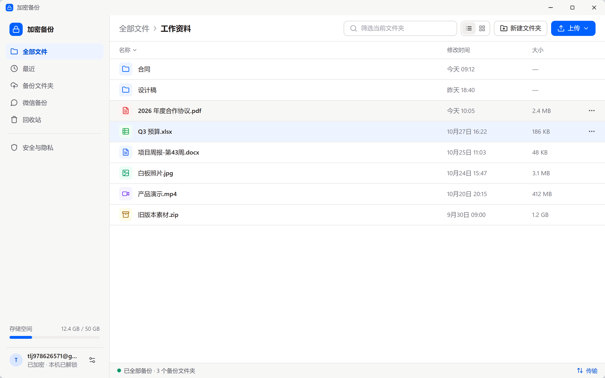

文件在你的电脑上加密后才上传，服务器只保存密文。选好文件夹，之后新增和修改的文件都会自动备份，还能单独备份微信。

网页版随时可用；客户端适合需要自动备份的电脑。
安装包由维护者签名发布，客户端会自动检查并安装更新。
8f3c2a91d0e74b6c5a1f9e2d7c4b8a3f6e5d0c9b8a7f6e5d4c3b2a1f0e9d8c7b2b7e4d1a9c8f3e6b5d0a7c4f1e8b2d9a6c3f0e7b4d1a8c5f2e9b6d3a0c7f4e1b客户端暂未购买系统厂商的签名证书，第一次打开时系统会提示，按下面的步骤放行即可。
已安装的客户端会自动提示新版本。